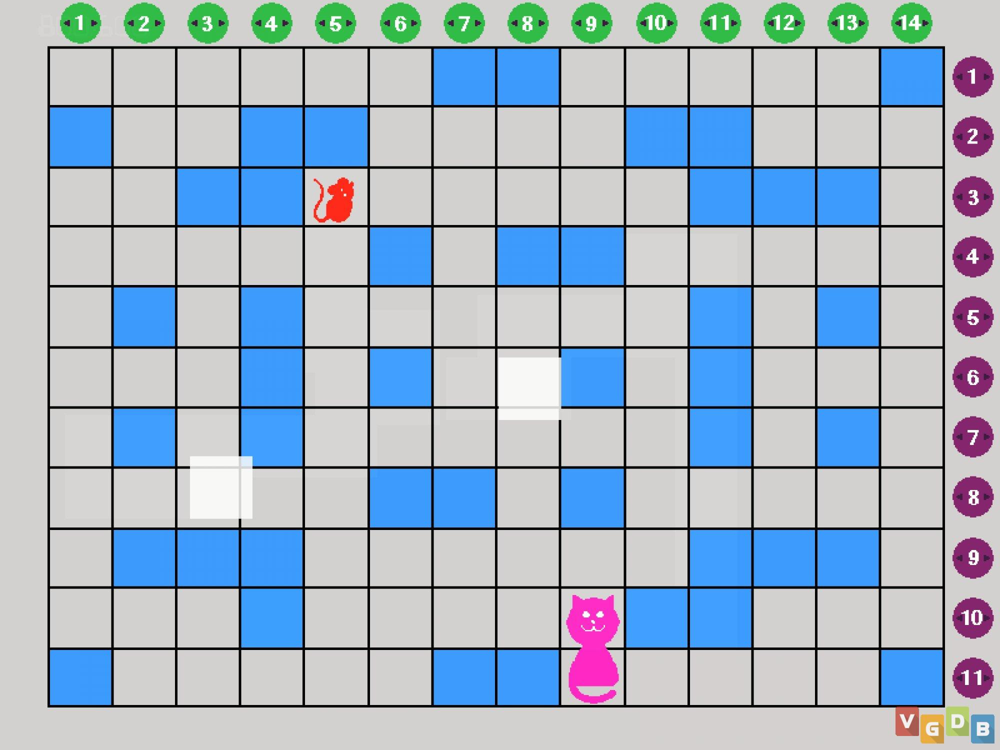
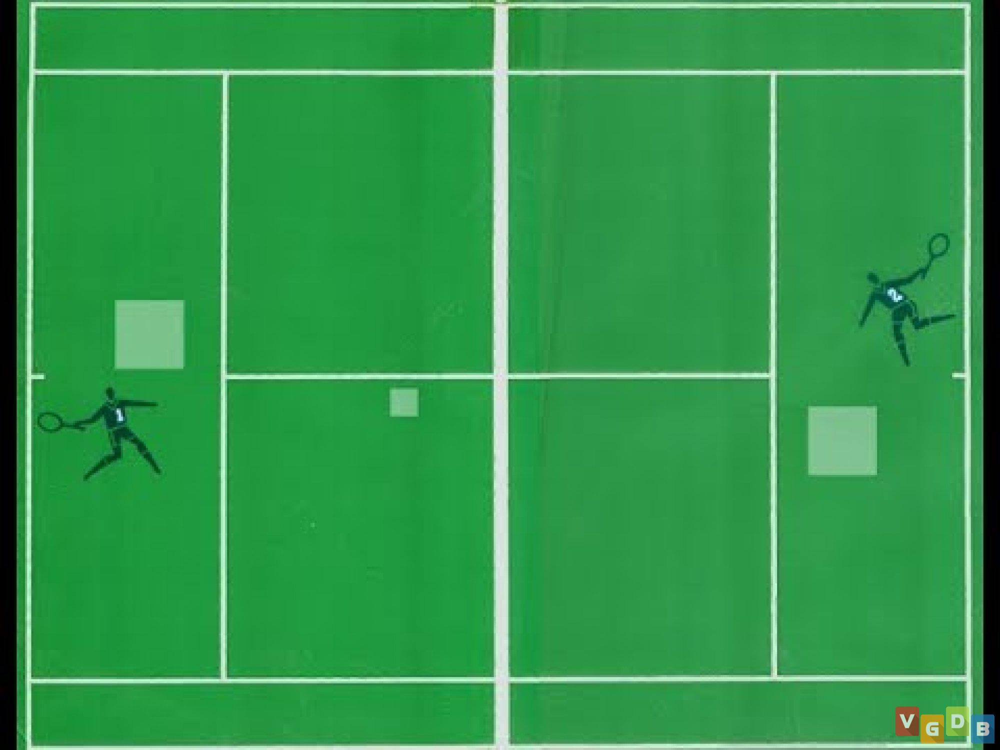

O Magnavox Odyssey é o primeiro console de videogame doméstico comercial da história. Foi apresentado pela primeira vez em abril de 1972 e lançado em setembro do mesmo ano, antecipando o jogo Pong da Atari. Vamos explorar mais sobre esse pioneiro:
Comentando um pouco sobre os alguns dos jogos de Magnavox Odyssey:
Cat & Mouse:Nesse jogo, dois jogadores participam de uma divertida batalha eletrônica de esconde-esconde. O objetivo do rato é chegar à sua casa sem ser pego pelo gato, que, por sua vez, tenta capturá-lo.

Table Tennis:Não usava uma sobreposição na tela da televisão a jogabilidade era simples, e os jogadores se posicionavam em lados opostos da tela, enviando a bola em movimento ao pressionar o Botão de Reset,sendo esse jogo inspiração para o Pong.

O Magnavox Odyssey marcou o início da primeira geração de consoles de videogame e foi parte inicial do crescimento da indústria comercial de videogames. Um verdadeiro pioneiro!